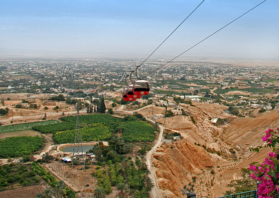

هي مدينةٌ فلسطينية تعدُّ أقدم مدينةٍ في التاريخ على الإطلاق؛
حيث يعود تاريخها إلى أيام العصر الحجري وهو ما يقدر بنحو 10,000 سنةٍ ق.م،
وهي تقع في غور الأردن، على بعد 10 كم شمال البحر الميت في الضفة الغربية،
وعلى بعد 7 كم من غربي نهر الأردن، وتُشكّل المدينة الحدود الطبيعية بين الأردن وفلسطين
تُعدُّ مدينة أريحا أكثر المدن انخفاضاً في العالم؛
حيث يبلغ مستواها 250 م تحت مستوى سطح البحر،
وهي عاصمة محافظة أريحا، وتُعرف المدينة أيضاً باسم مدينة القمر، ومدينة النخيل،
وأصل تسميتها ساميُّ الأصل؛ فقد ذكر البغدادي في معجم البلدان أنّ اسم أريحا
يعود في أصله إلى أريحا بن مالك بن أرنخشد بن سام بن نوح -عليه السَلام.
مـــوقـــع مــديــنــة أريــحــا
تقع مدينة أريحا في الطرف الغربي لغور الأردن أو ما يعرف بغور أريحا،
وهي أقرب للحافة الجبلية لوادي الأردن الانهدامي، منها إلى نهر الأردن،
تقع عند خط الانقطاع بين البيئة الجبلية إلى الغرب والبيئة الغورية في الشرق،
وهي تعتبر نقطة عبور هامة منذ القدم للقوافل التجارية والغزوات الحربية التي كانت تتجه غرباً نحو القدس وشرقاً نحو عمان،
وهي أيضاً الممر الغربي لنهر الأردن والبحر الميت، يمر منها الحجاج المسيحيون
القادمون من القدس في طريقهم إلى نهر الأردن والبحر الميت، من جهة أخرى،
كانت أريحا البوابة الشرقية لفلسطين، عبرتها كثير من الجماعات البشرية
المهاجرة على مدى العصور، وتنخفض عن سطح البحر نحو(276م).
مـــنـــاخ مــديــنــة أريــحــا
يتميز مناخ أريحا بالمداري الصحراوي،
حيث تسقط عليها أشعة الشمس معظم أشهر السنة،
إذ يصل ارتفاع متوسط درجة الحرارة في السنة إلى 23.5 درجة مئويّة، وتهطل عليها كميات قليلة من الأمطار لا تكفي لري محاصيلها.

نـــبـــذة عـــن تــــاريـــخ أريــحــا
تخذ الهكسوس من مدينة أريحا قاعدةً لهم إلى أن هُوجمت من قبل العبرانيين الذين أحرقوها وأهلكوا من فيها،
ثمّ أخرجهم المؤابيون واتخذوها عاصمة لهم، ازدهرت المدينة بعد ذلك في عهد الرومان والبيزنطيين،
ثمّ وقعت تحت حكم المسلمين وأصبحت في عهدهم أهمّ مدينةٍ زراعيةٍ في الغور
وبعد غزو الصليبيين لفلسطين وقعت المدينة تحت حكمهم كغيرها من مدن فلسطين،
وبعد ذلك وقعت تحت الحكم المملوكي، الذي تلاه الحكم العثماني، ثمّ الانتداب البريطاني،
ثمّ الاحتلال الصهيونيّ في عام 1967م، وسُلِّمت بعد ذلك إلى السلطة الوطنية الفلسطينية بعد اتفاقية أوسلو.
تشتهر أريحا بصناعة الفخار، الحصر، النسيج والمياه الغازية.
ازدهرت صناعة استخراج المعادن والأملاح من البحر الميت، مثل: كلوريد البوتاسيوم، والصوديوم، والماغنيسيوم، والكالسيوم،
وتوجد في البحر الميت كميات هائلة من هذه المواد تقدر بملايين الأطنان.
وهو عبارة عن تل ذي شكل بيضوي يحتوي على بقايا أثرية
تعود لنشاط بشري من حقبة ما قبل التاريخ،
وتقع بالقرب منه "عين السلطان" وهي نبع ماء دائم.
وقد نشأت في هذا الموقع مستوطنة دائمة بين الألفية
التاسعة والألفية الثامنة قبل الميلاد
نظراً إلى وجود التربة الخصبة في الواحة وسهولة الوصول إلى المياه
يقع قصر هشام في خربة المفجر، في منتصف منطقة صحراوية،
على بعد 5 كيلو مترات، إلى الشمال من مدينة أريحا.
شيده الخليفة الأموي هشام بن عبد الملك سنة ( 724 –743 ) م، أو
الوليد بن يزيد ( 743 – 49 ) م مقرا للدولة.
يتكون القصر من مجموعة من البنايات والحمامات
والجوامع وقاعات مليئة بالأعمدة الأثرية.
ديــــر قـــرنـــطـــل
دير قرنطل هو دير أرثوذكسي يوناني يقع في أريحا، فلسطين،
تم بناؤه على سفوح جبل الأربعين على ارتفاع 350 متر فوق مستوى سطح البحر،
ويقع على طول جرف يطل على مدينة أريحا ووادي الأردن.
يعمل حاليا كمنطقة جذب سياحي وأرضه خاضعة للسلطة
الوطنية الفلسطينية بالكامل،
على الرغم من أن الدير يمتلك وتديره
الكنيسة الأرثوذكسية اليونانية في القدس.